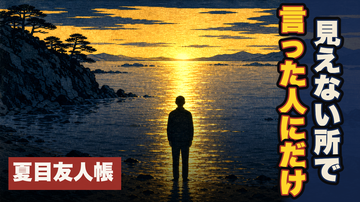

EP58 FULL-VIEW GATE ｜ 2026-08-17 ｜ 7分46秒 ｜ 公開枠 9/18(金) 04:00
通し視聴：夏目友人帳 × 中孚
これでよければ、非公開でアップして9/18に予約します（公開ボタンはご本人）
結論：完成しました。機械ゲート（台本・タイミング・約束・ミックス・黒落ち）全PASS、識別監査19/19「不明」、読者ゲート84点。
要判断：あり — A(これで出す)/B(直す箇所を指定)。
詳細：下の動画を通しで1回見ていただくのが本番です。§申告 の2点だけ先に目を通してください。
本編（プレビュー画質・854×480）
※配信用の原盤は1920×1080・605MB。これは確認用に圧縮したものです（絵の粗さは原盤にはありません）。
タイトルとサムネ

タイトル（41字）
気を遣うのは得意になったのに、本音を話せる相手が、一人もいない。｜夏目友人帳×中孚
サムネ題字「見えない所で／言った人にだけ」
タイトルと語を1つも共有していません。タイトルが言わないこの回の芯（誰も見ていない場所で言った人にだけ応えが返る）を出し、「言った人にだけ、何が起きるのか」を未解決に残しています。
申告（2点）
① 幕1を作り直しました。文字数から見積もった長さは35秒でしたが、音声にすると実測49秒ありました（Irodoriの発話は見積もりより3割遅い）。冒頭7〜18秒は最大離脱帯なので、重複していた「大丈夫です」の一往復と予告の一文を削って35秒に収め、音声を全部録り直しています。生活場面3つと語り手の立場はそのままです。
② 「続ければ、凶。」の「凶（きょう）」は、音声認識では2つのモデルとも「今日」と書き起こします。発音自体は正しいので直していません。字幕に漢字が出ること、直後に「言葉だけで信用を起こそうとすれば、続ければ悪い」と言い換えていることで意味は通ります。
ep52（8/28公開予約済み）で見つけた見逃し。今回と同じ検査をかけたところ、ep52は幕1が実測41秒（基準36秒）のまま出荷されていました。音声ができる前に検査を通し、その後再検査していなかったためです。ep52は私のレーン外なので触っていません。直すかどうかはご指示ください。
検査の結果
| ミックス | PASS — 尺465.6秒／ピーク-4.7dB（クリップなし）／幕間BGM -42.0dB／シーン境界19箇所すべて黒落ちなし |
|---|
| 台本（実測尺） | PASS — 幕1=35秒／対比の投入=81秒／説明の連続=最大3シーン／総尺463秒 |
|---|
| 字幕・カット | PASS — 20シーンの全文一致・語境界・表示時間・カット順 |
|---|
| 冒頭の約束 | PASS — 0〜8秒に「夏目友人帳 夏目貴志／易経・中孚（ちゅうふ）」 |
|---|
| 識別監査 | PASS — 19カットすべて作品・キャラとも「不明」。顔・原作意匠・文字・写実の4項目すべてなし。猫は一匹も描いていません |
|---|
| 作中事実 | 11件すべて ja.wikipedia 一次照合（「うそつき」「薄気味悪い」「問い質されてもごまかしている」は逐語）。結末には触れていません |
|---|
| 易経 | 卦辞「豚と魚。吉」・九二の鶴・六三の太鼓・上爻の鶏＝すべて db 本文の逐語訳。漢文は引いていません |
|---|
| 読者ゲート | 84点（合格70）・3秒で停止・完走・いいね押す。「大丈夫です、ただ、木曜までは正直きついです、は明日使えそう」 |
|---|
| 発音 | ASR照合 FAIL 0・WARN 9。WARNは全て漢字表記のズレ（「親直」＝しんちょく等）で、発音は正しいことを確認済み。「律儀に鳴く」は大きいモデルで再確認 |
|---|
あなたの判断
A
これで出す（推奨） → 非公開でアップロード＋9/18 04:00 予約まで進めます（公開ボタンはご本人）
B
直す箇所を指定＝時刻（例 4:35）か シーンID で、気になった点をチャットで
ep52の幕1をどうするか（触る／触らない）も、この返信に添えていただければ対応します。